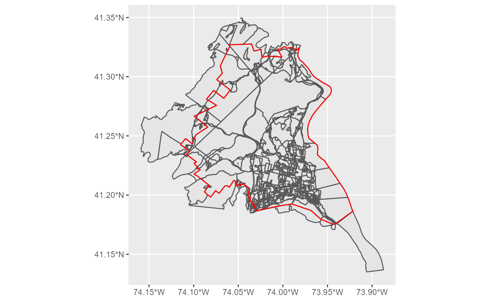
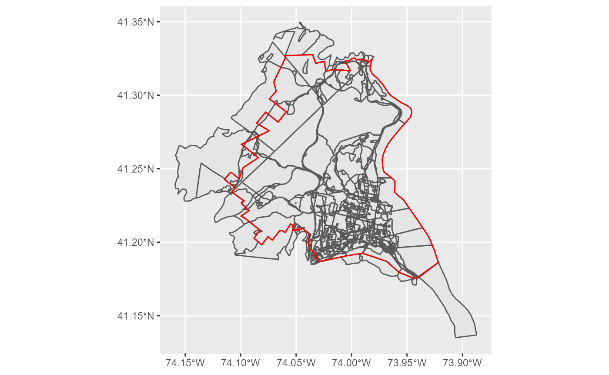
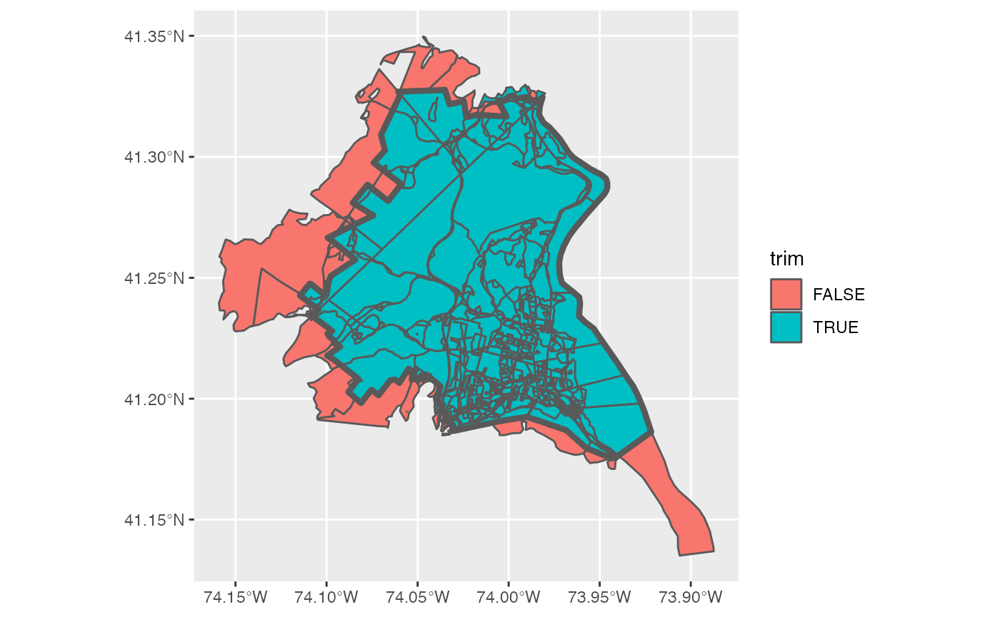
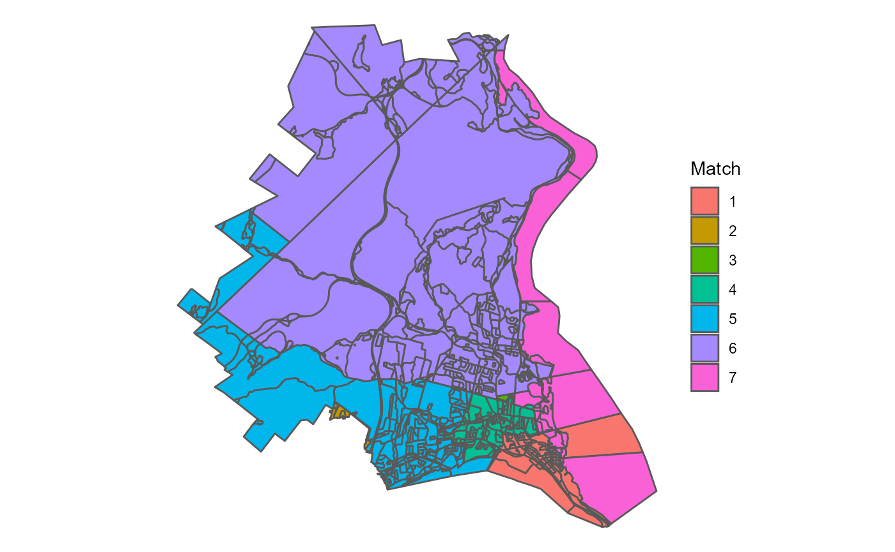
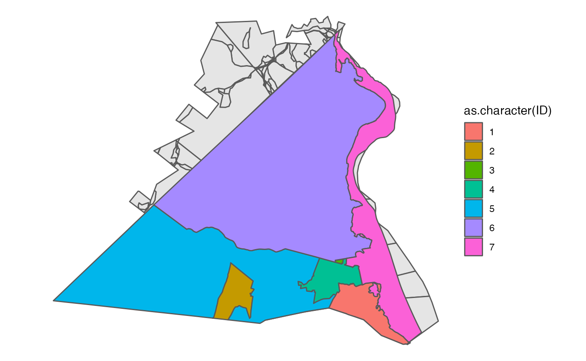
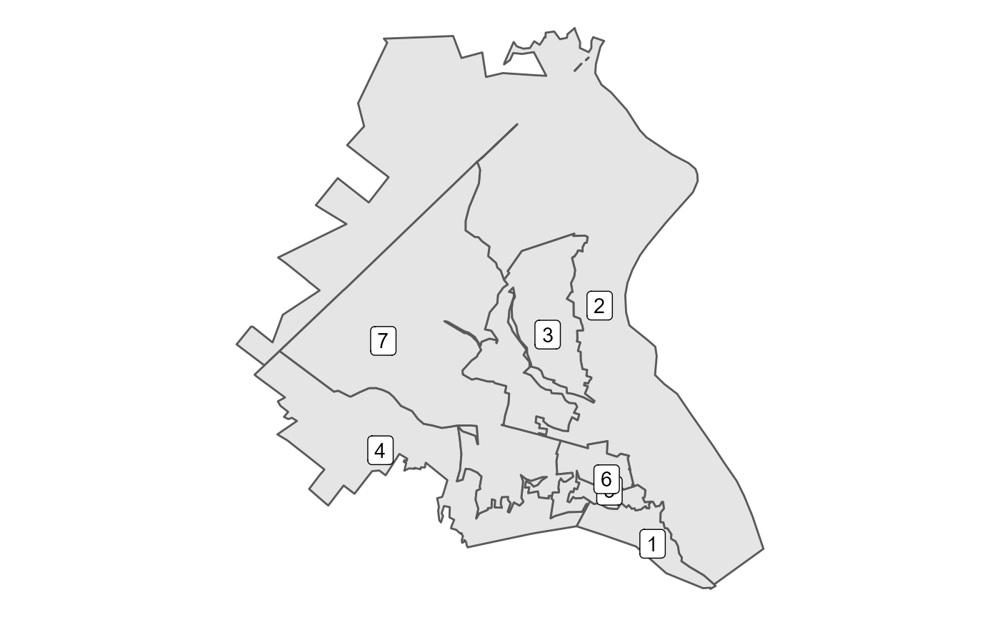

vignettes/Redistricting_School_Districts.Rmd
Redistricting_School_Districts.RmdThe primary motivation behind this package is to make data preparation steps easier for redistricting simulation methods within R. This vignette covers a few key tasks, primarily building a block level dataset of population data, subsetting by spatial relationship, and then running a basic simulation. This is shown in the context of dividing North Rockland Central School District in NY into 7 wards at the block level.
library(geomander)
library(ggplot2)
library(dplyr)
library(stringr)
library(redist)
library(sf)
library(tigris)First, we want to build a block level dataset. The school district intersects two counties, though almost all of the population in the district comes from Rockland County. create_block_table allows you to build block level datasets with the primary variables needed for redistricting purposes - total population by race and voting age population (VAP) by race.
blocksRockland <- create_block_table(state = 'NY', county = 'Rockland')
blocksOrange <- create_block_table(state = 'NY', county = 'Orange')
blocks <- bind_rows(blocksRockland, blocksOrange)For this vignette, rather than running the above, we use included data. orange is a subset of Orange County which intersects with the school district. Rockland is the entire block dataset. These polygons are simplified using rmapshaper to make them smaller.
Next, we need the shape for North Rockland, which can be obtained from the R package tigris as below. The same idea holds for having target areas, such as counties or legislative districts, though they are less likely to directly use the block level data.
school <- school_districts(state = 'NY') %>% filter(str_detect(NAME, 'North Rockland'))As above, we use a saved version that doesn’t need API access to download.
data("nrcsd")
school <- nrcsdThe immediate and common difficulty here is that we have nearly 15,000 blocks, but the target region, in this case the school district outlined in red is significantly smaller than that.
blocks %>% ggplot() +
geom_sf() +
geom_sf(data = school, fill = NA, color = 'red') +
theme_void() As a first pass, we can use the geo_filter function, which wraps sf’s st_intersects and filters only to those that intersect.
blocks <- blocks %>% geo_filter(to = school)This drops us down to 852 blocks and is a conservative filtering, as you only need to intersect at a single point.
blocks %>% mutate(id = row_number()) %>%
ggplot() + geom_sf() +
geom_sf(data = school, fill = NA, color = 'red')  Yet, we probably want to go further than that, getting rid of the various external pieces. We can use geo_trim to do just that. First, we want to check what would be thrown away at the default area threshold of 1%. Below, I’ve first checked what would be trimmed away, by setting bool = TRUE and plotting it.
blocks$trim <- blocks %>% geo_trim(to = school, bool = TRUE)## Warning: attribute variables are assumed to be spatially constant throughout all
## geometries
To me, it looks like we are subsetting correctly with this threshold, so we actually trim away this time.
blocks <- blocks %>% geo_trim(to = school)## Warning: attribute variables are assumed to be spatially constant throughout all
## geometriesAnd indeed, just plotting the block geographies looks like the school district from before. The edges will be a bit off due to polygon simplification.
blocks %>% ggplot() +
geom_sf() +
theme_void() +
geom_sf(data = school, color = 'red', fill = NA)
Very often, at this step, we want to consider including information about other geographies, particularly towns, villages, or counties. In the package, for illustration purposes, I’ve included a small towns dataset from the Rockland County GIS Office.
data("towns")
blocks %>% ggplot() +
geom_sf() +
theme_void() +
geom_sf(data = towns, aes(fill = as.character(ID)))
From this, we can then try to match our blocks to towns. I use the default setting, which relies on st_centerish, which comes from st_centroid when the centroid is within the shape and otherwise relies on st_point_on_surface to ensure that we are only matching by points within a shape.
matched <- geo_match(from = blocks, to = towns)Now, I’ve used the default tiebreaker setting, which assigns all blocks to a town, even if they do not overlap.
blocks %>%
ggplot() +
geom_sf(aes(fill = as.character(matched))) +
theme_void() +
labs(fill = 'Match')So, we want to make two particular edits to the outcome. First, we create a fake Orange County Town for the blocks that come from Orange County, though there are only a few dozen people who live in those blocks.
blocks <- blocks %>% mutate(TownID = matched) %>%
mutate(TownID = ifelse(county != '087', 8, TownID)) Second, we can see that one block in 7 was matched to 1 because it didn’t properly intersect the towns and thus went for the closest town by distance between their centroids. The same issue happened for two blocks in Di
Now, to figure out what’s going on and try to clean it up, we can build an adjacency graph for each block by town and see which pieces are discontinuous.
adj <- redist.adjacency(shp = blocks)
comp <- check_contiguity(adjacency = adj, group = blocks$TownID)
which(comp$component > 1)## [1] 576 586 591Then, using that information, we can figure out three of these need to be renamed.
blocks$TownID[409] <- 7
blocks$TownID[586] <- 2
blocks$TownID[591] <- 4Now all towns are completely connected or contiguous.
comp <- check_contiguity(adjacency = adj, group = blocks$TownID)
which(comp$component > 1)## integer(0)Finally, we have the data in a simulation-ready state! We can now use the adjacency list created above with redist.adjacency to run a simulation using redist.smc. See the redist package for more information about what’s going on here.
map <- redist_map(blocks, pop_tol = 0.01, ndists = 7, adj = adj)## Projecting to CRS 3857
sims005 <- redist_smc(map, nsims = 500, counties = TownID, silent = TRUE)
plans <- get_plans_matrix(sims005) %>% unique(MARGIN = 2)
par <- redist.parity(plans = plans, total_pop = blocks$pop)
comp <- redist.compactness(shp = blocks, plans = plans, adj = adj, measure = 'EdgesRemoved')
comp_m <- comp %>% group_by(draw) %>% summarize(mean = mean(EdgesRemoved))
pick <- tibble(parity = par) %>% bind_cols(comp_m) %>% slice_max(order_by = mean, n = 1) %>% pull(draw)In short, the above uses a Sequential Monte Carlo algorithm to draw 500 compact districts that try to preserve towns. From those, I pick a map that is on average, pretty compact.
Using that choice of districts, we can then summarize the block level data, using block2prec, but in this case it is summarizing to a ward level.
smry <- block2prec(blocks, matches = plans[,pick])Then we have the basic information we want and we can look at the VAP data to see that we have one majority minority Hispanic ward and one potential coalition ward.
smry %>% select(matches_id, starts_with('vap'))## # A tibble: 7 x 10
## matches_id vap vap_hisp vap_white vap_black vap_aian vap_asian vap_nhpi
## <dbl> <dbl> <dbl> <dbl> <dbl> <dbl> <dbl> <dbl>
## 1 1 5459 895 3485 701 8 301 0
## 2 2 4881 3490 775 457 9 98 0
## 3 3 5137 1965 2263 640 5 178 0
## 4 4 5333 624 4401 141 4 111 2
## 5 5 5252 2537 1677 761 9 209 2
## 6 6 5212 979 3599 385 8 192 1
## 7 7 5186 542 4230 181 3 181 0
## # ... with 2 more variables: vap_other <dbl>, vap_two <dbl>And finally, we can also use block2prec to join the geometries of the wards to plot:
block2prec(blocks, matches = plans[,pick], geometry = TRUE) %>%
ggplot() +
geom_sf() +
theme_void() +
geom_sf_label(aes(label = matches_id))